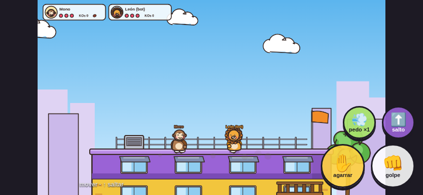

Controles en celular
Dos pulgares, cuatro botones

Pulgar izquierdo: joystick flotante que aparece donde tocas. Empujar hacia arriba también salta.
Pulgar derecho: golpe y agarrar abajo (los más usados), salto y pedo arriba. El botón de pedo se enciende solo cuando llevas frijol.